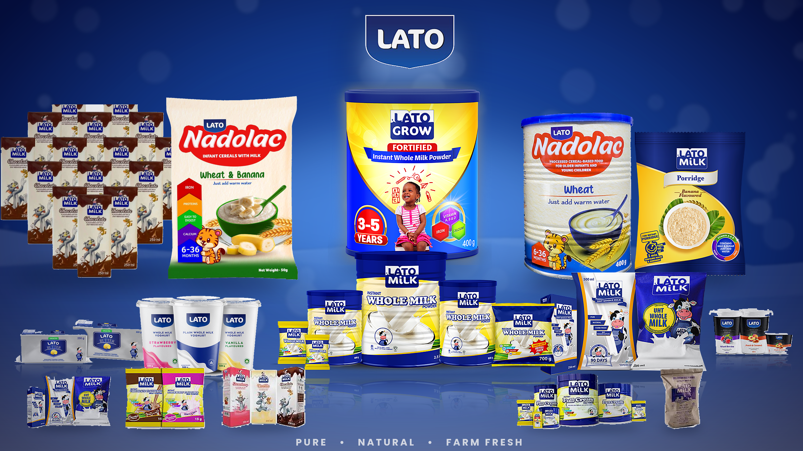
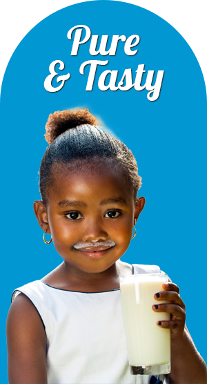
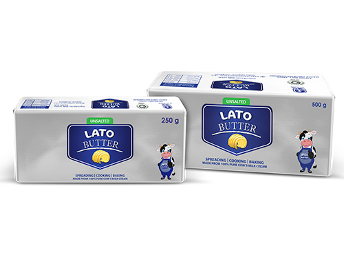
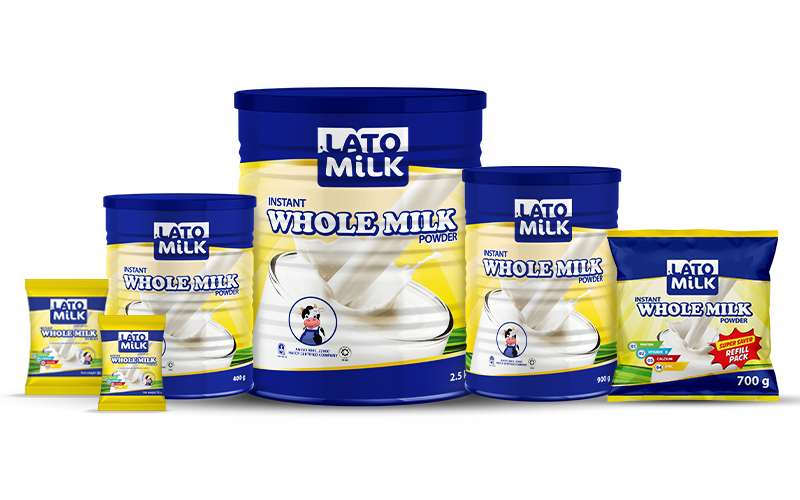
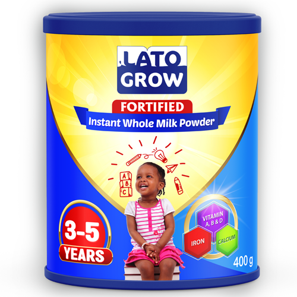
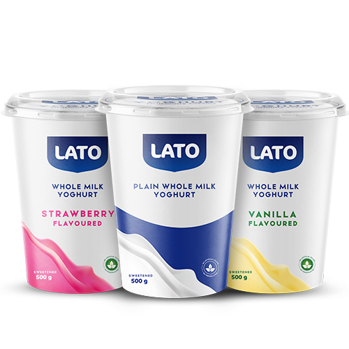
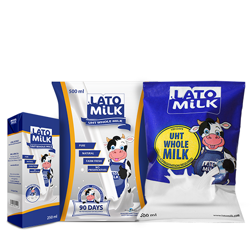
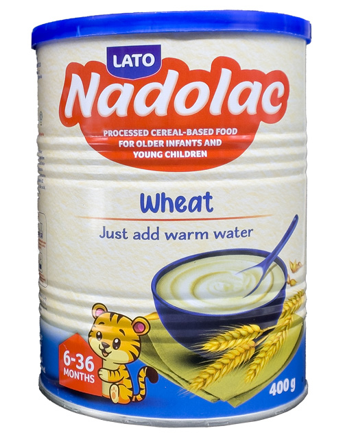
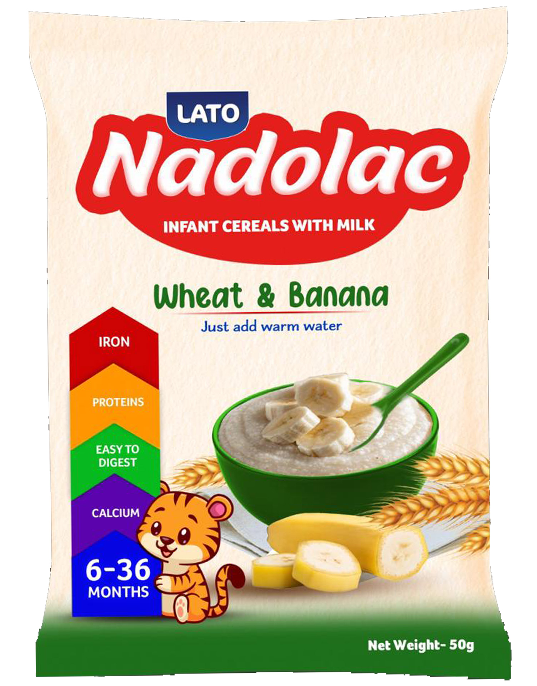
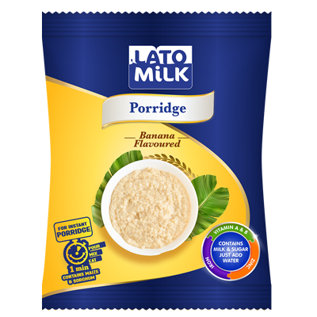

.jpeg)
LATO MILK UGANDA LTD
The foundation of a healthy lifestyle

Product Gallery
Milk powders, liquid milk, yoghurt, butter and infant cereals from the Lato family.
.jpeg)






.jpeg)





LATO MILK: Pure & Nutritious
Welcome to Lato Milk, your favorite family nutritious food supply. We are dedicated to providing the highest quality dairy products, sourced from the finest farms. Our legacy is built on purity, trust, and health. From fresh milk to creamy yogurts and rich powdered milk, we serve you to the maximum to help your family grow super stronger every day.
Company background. Lato is the consumer brand of Pearl Dairy Farms Limited, a Ugandan dairy processor with its head office and main factory at Biharwe, Mbarara. The foundation of the milk processing plant was laid in 2009, and the brand has since grown from bulk milk powder into instant milk powders, UHT milk, flavoured milk, yoghurt, butter, ghee, fortified child nutrition and Nadolac infant cereals.
Our Mission and Vision
Mission
To provide safe, nutritious and affordable dairy products that help families grow stronger every day, while supporting the farmers who supply our milk.
Vision
To be the most trusted dairy and nutrition brand in East Africa and beyond, known for purity, quality and a healthy start for every family.
Our Legacy
More than a decade of growth built on farmers, quality and trust. Lato has helped turn Uganda into a net exporter of dairy products in the region, and the company says farmers today earn about three times what their milk fetched before the plant opened.
The foundation of the milk processing plant is laid at Mbarara, followed by commercial production of whole and skimmed milk powder in bulk packs.
Lato is established as the consumer brand of Pearl Dairy Farms, with instant full cream milk powder in 900 g and 400 g tins and 15 g sachets.
The liquid milk processing unit is inaugurated by President Yoweri Museveni, and 90-day UHT milk is introduced in 500 ml and 250 ml packs.
Lato Butter (salted and unsalted, 250 g and 500 g) and Lato Flavoured Milk in strawberry, vanilla and chocolate join the range. The Farmers Community Program and the Lato Help Program, which finances corrective surgeries for children with disabilities, begin.
Lato makes its first milk powder export to Zambia, 50 tonnes by road, and unveils a new line able to pack 130,000 litres of milk a day.
Lato Grow, a fortified instant milk powder for children aged 3 to 5, is introduced, and Lato agrees with Kenya's state financier KDC to invest in dairy ventures in Kenya.
Factories, Branches and Depots
Head Office and Main Factory
Biharwe, Mbarara, Uganda
The company's primary plant, where milk is received from farmers and processed into the Lato range.
- Milk powders (whole and skimmed)
- UHT liquid and flavoured milk
- Yoghurt, butter and ghee
Kenya Facility
Kenya
A second production site that supports supply to the Kenyan market and the wider East African region, backed by a partnership with Kenya Development Corporation.
Regional Depots
Central, Western, Eastern and Northern Uganda
Depots hold stock close to distributors, wholesalers and retailers so that Lato products reach shops and families quickly and fresh.
Markets we serve
Uganda is our home market. Lato products are also sold in Kenya, and milk powder has been exported to Zambia since 2021.
Raw Materials and Available Market
Quality starts at the farm. Fresh cow's milk is our main raw material, and every Lato product also draws on a range of other ingredients that are available in the region.
| Raw material | Used in | Where it comes from | Market availability |
|---|---|---|---|
| Fresh cow's milk | Milk powders, UHT milk, yoghurt, butter, ghee | Over 10,000 smallholder farmers in Uganda and over 5,000 in Kenya, supplying through collection points and cooperatives | Available all year, with the highest supply in the rainy seasons. Farm-gate prices have risen from about UGX 400 to over UGX 1,100 per litre since the plant opened. |
| Cereals: wheat, maize, sorghum | Nadolac infant cereals, instant porridge | Local farmers and grain markets, plus regional suppliers | Maize and sorghum are widely grown in Uganda; wheat is sourced from regional suppliers. |
| Bananas and fruit | Nadolac Wheat & Banana, fruit yoghurts | Local growers and fruit markets | Bananas are available all year round; seasonal fruits are sourced when in season. |
| Sugar, cocoa and flavourings | Flavoured milk, sweetened yoghurt, porridge | Ugandan sugar producers and approved ingredient suppliers | Steady supply from local and regional markets. |
| Vitamins and minerals | Lato Grow, fortified milk and cereals | Approved nutrition ingredient suppliers | Sourced in bulk under quality-assurance checks. |
| Packaging materials | Tins, sachets, cartons, tubs and butter wraps | Regional and international packaging suppliers | Contracted supply to keep production running all year. |